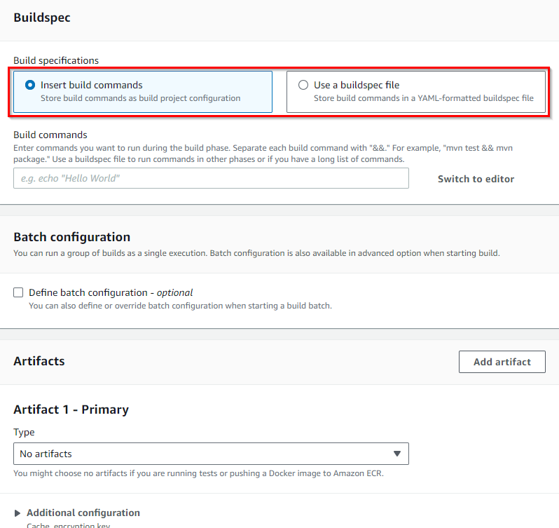
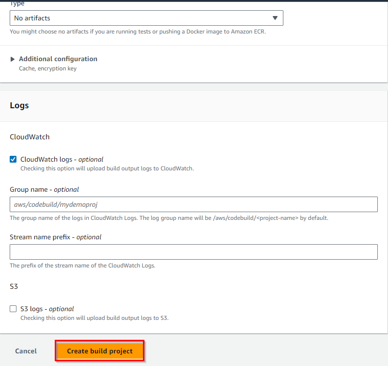

AWS-CodeBuild:-The Ultimate Solution for Converting Source Code to Deployable Build Files
Welcome to Chapter 24 of our "Mastering AWS DevOps" series! In this blog, we will continue with all the steps of getting started with the AWS CodeBuild in detail. In the world of DevOps continuous integration and continuous deployment (CI/CD), automation is the key to success. AWS (Amazon Web Services) provides a wide range of tools and services to streamline your development and deployment processes.
AWS CodeBuild

CodeBuild is a fully managed service by AWS, saving us the effort of setting up and managing underlying infrastructure for ‘software build’ and ‘software test’ tasks. This allows us to focus more on actual coding and testing. It plays a central role in simplifying and accelerating the process of building and testing code, a fundamental element of the modern software development lifecycle.
This is the short introduction of the AWS CodeBuild.
Let’s begin!!
1. Setting up AWS CodeBuild
At this point, we will set up an AWS CodeBuild.

In this image, we show the exact process of how AWS CodeBuild works.
Let us explain the diagram, so you will get a clear idea about it.
In the above diagram, there are two terms used i.e. Inputs, and Outputs. Now first we will explain what inputs have. In the Inputs, it has source code, it has a “build.yaml” file as input to the AWS CodeBuild. Now, the source code is provided to the AWS CodeBuild as input. Then “build.yaml” file which defines —
- It defines how to run code.
- It defines which command to use.
- It defines which environment to use for your code.
This is the input term provided as an input to the AWS CodeBuild.
Now, we will see what the output is.
The output contains Artifact (a deployable source code file) and CloudWatch logs.
The word output itself defines the meaning of the output word. It is the output generated by AWS CodeBuild.
This is the explanation of the above image.
Before diving into the hands-on demos, you will need an AWS account. This is an AWS-related blog, so I am considering that you have an account on AWS. Once you have an AWS account, navigate to the AWS Management Console
1.1 Steps to Set Up AWS CodeBuild
Setting up AWS CodeBuild is a crucial step in automating your build and test workflows.
Here, we’ll walk you through the essential steps to set up AWS CodeBuild:
- Open the AWS Management Console: To begin, log in to your AWS account and access the AWS Management Console.
- Navigate to CodeBuild: In the AWS Management Console, you can locate the AWS CodeBuild service by searching for “CodeBuild” in the search bar or by navigating to it through the “Developer Tools” section.
- Now, we have successfully logged into the AWS Management Console.

2. Creating a CodeBuild Project
Let's create a CodeBuild project from the very beginning.
Demo 1: Creating a CodeBuild project
Once you are inside the AWS CodeBuild service, click on the “Create project” button as shown below.

This action initiates the process of setting up a new build project from the very beginning.
Project Configuration:
Here, you will need to provide the following information:
Project Name:
Give your project a descriptive name. This is how you will identify it later in the CodeBuild console. For this example, let’s name it “Mydemoproj.”

Source Provider:
In the source provider, Choose the source code repository you are using for your Node.js application. In our example, we are selecting “GitHub”.

Now, we have 2 options to select credentials after selecting GitHub.
1. Default source credentials
2. Custom source credentials
You can select the radio button accordingly.

Environment
The Environment refers to the runtime setup in which your build processes (such as compiling code, running tests, or packaging artifacts) are executed. This environment defines the underlying system, tools and dependencies that are available to the build job.
Environment Image: The environment image is a Docker image that contains the runtime and tools needed to execute your build. You can choose from.
- Managed Images: AWS provides pre-configured Docker images for popular languages (e.g. Node.js, Python, Java, .Net, Go). These come with common development tools pre-installed.
- Custom Images: You can provide your own Docker image hosted in Amazon ECR or Docker Hub if you need specific tools or configurations that aren’t in the managed images.
Buildspec:
The “Buildspec” is where you define the instructions for the build and test phases. You can either write a “buildspec.yml” file manually or use the AWS CodeBuild console to create a template.
For our Node.js application, the buildspec.yml could look like this:

3. Configuring Build Specifications
The heart of your CodeBuild project is the buildspec.yml file. This YAML file defines what happens during the build and test phases.
After creating an AWS CodeBuild project, the next crucial step is to configure the build specifications. These build specifications, defined in a buildspec.yml file, outline the exact steps and commands that AWS CodeBuild will follow to build, test, and package your application. In this step, we’ll dive into the details of configuring build specifications for your CodeBuild project.
Demo 2: Creating a buildspec.yml File
To get started with build specifications, you need to create a buildspec.yml file. This file will be included in your source code repository and serves as a blueprint for CodeBuild to follow. Here’s an example buildspec.yml for a Node.js application:

version: 0.2
phases:
install:
commands:
- npm install
build:
commands:
- npm test
artifacts:
files: '**/*'
In this example:
- version: 0.2 specifies the format version of the buildspec file.
- phases define the different phases of your build process. In this example, we have two phases: install and build.
- commands under each phase list the specific commands to execute. For the install phase, we run npm install to install project dependencies. In the build phase, we execute npm test to run tests.
- artifacts specify what files or directories should be included in the build artifacts. The files: '**/*' means that all files and directories in your project should be included.
Phases: Define the build phases, such as installing dependencies and running tests.
Commands: Specify the commands to be executed in each phase.
Artifacts: Specify what files should be included in the build artifacts
- Logs:
Logs provide detailed output of your build process, allowing you to troubleshoot errors and monitor progress. Logs capture information from each phase of the build (install, pre-build, build, and post-build) including command output, error messages and environment configurations.
Types of Logs in CodeBuild:
Cloudwatch Logs
S3 Logs (optional)
Build Console Logs
Fill in all the information and click on “Create Build Project”.
4. Building and Testing Code
After configuring build specifications in AWS CodeBuild, the next step is to initiate a build, during which CodeBuild follows the instructions specified in the buildspec file (buildspec.yml) to build and test your code. In this step, we’ll delve into the process of building and testing code using AWS CodeBuild.
Step 1: Triggering a Build
Before your code can be built and tested, you need to initiate a build. There are several methods to trigger a build:
- Manual Start: In the AWS CodeBuild console, you can manually start a build for your project. This is useful for testing and debugging your build process. Here’s how you can manually start a build:
- In the AWS CodeBuild console, locate your project and click on it to access the project details.
- Click the “Start build” button to initiate a manual build. This will trigger CodeBuild to follow the instructions specified in your buildspec.yml file
- Integration with CI/CD: In a Continuous Integration/Continuous Deployment (CI/CD) pipeline, AWS CodeBuild can be automatically triggered whenever changes are pushed to your source code repository. This is a common and powerful way to ensure that code is automatically built and tested upon changes.
Step 2: CodeBuild Execution
Once a build is triggered, AWS CodeBuild will execute the following steps as defined in your buildspec.yml:
- Install Phase: In this phase, CodeBuild will execute the commands specified in the install section of your buildspec.yml. It’s common to use this phase for tasks such as installing project dependencies or setting up the build environment.
- Build Phase: The build section of the buildspec.yml contains commands that are executed in the build phase. This is where your application’s build and test processes occur. For example, you might compile your code, run unit tests, and generate artifacts.
- Artifacts Generation: As specified in the artifacts section of your buildspec.yml, CodeBuild will package and store the build artifacts. These artifacts can include compiled code, test reports, or other files that are generated during the build.
5. Using AWS CodePipeline with CodeBuild
AWS CodePipeline allows you to automate your entire CI/CD workflow, including building, testing, and deploying your code using AWS CodeBuild as a crucial step.
AWS CodePipeline is a service that allows you to build, test, and deploy your code changes continuously. By integrating AWS CodeBuild into your CodePipeline, you can automate and streamline your entire software release process. In this step, we will explore how to use AWS CodePipeline with AWS CodeBuild.
Step 1: Create a CodePipeline
- Navigate to AWS CodePipeline:
- Use the search bar at the top and type “CodePipeline.”
- Click on the “CodePipeline” result to enter the AWS CodePipeline service.
- Create a New Pipeline:
- Click the “Create pipeline” button to initiate the process of setting up a new pipeline.
- Pipeline Settings:
- Define a pipeline name and choose the service role. The service role should have permissions to interact with AWS services and resources, including AWS CodeBuild.
- Source Stage:
- Configure the source stage by choosing the source provider where your code is stored, such as GitHub, CodeCommit, or an S3 bucket. You will also specify the repository and branch.
- Build Stage:
- In this stage, you will add an action to build your code. Choose “AWS CodeBuild” as the build provider, and select the project you created earlier in AWS CodeBuild.
- Deploy Stage:
- If your pipeline includes a deployment stage, you can configure it based on your deployment targets. This could be an AWS Elastic Beanstalk environment, an Amazon S3 bucket, or an AWS Lambda function, depending on your application.
- Review and Create:
- Review your pipeline configuration to ensure everything is set up correctly, and then click “Create pipeline.”
Step 2: Configure Your Pipeline Stages
The source stage monitors changes in your source code repository and triggers the pipeline automatically when new code is pushed.
The build stage uses AWS CodeBuild to build and test your code according to the specifications defined in your buildspec.yml.
If you have a deployment stage, it will take the output of the build stage and deploy it to your target environment.
Step 3: Monitor and Automate
Once your pipeline is set up, it will continuously monitor changes in your source code repository. When changes are detected, it automatically triggers the defined stages, which can include building and testing with AWS CodeBuild.
You can monitor the progress and status of your pipeline in the AWS CodePipeline console. This allows you to track the status of builds, deployments, and any errors that may occur.
Step 4: Review and Iterate
Just like when using AWS CodeBuild on its own, it’s important to regularly review your pipeline’s logs and the outcomes of your builds and deployments.
If issues or improvements are identified, you can update your pipeline’s configurations and the buildspec.yml file to refine your entire software release process.
Testing Changes
After making changes to your CodeBuild configuration or buildspec file, it's important to thoroughly test the changes. Here are some testing scenarios to consider:
- Trigger a new build and verify that it successfully completes without errors.
- Review the build logs to ensure that all the desired steps are executed correctly.
- Test the built artifact to confirm that it functions as expected.
End of Using AWS CodePipeline with CodeBuild
By integrating AWS CodeBuild into AWS CodePipeline, you automate the entire software development and deployment process. Changes in your source code repository trigger a sequence of actions, from building and testing with CodeBuild to deploying your application to various environments. This automation results in faster, more reliable, and efficient software delivery.
Demo 4: Setting Up CodePipeline with CodeBuild
- Create a CodePipeline:
- Navigate to AWS CodePipeline in the AWS Management Console.
- Create a new pipeline and configure your source, build, and deployment stages.
- Add CodeBuild as a Stage:
- Add a build stage to your pipeline and select your CodeBuild project.
- Configure Triggers:
- Set up triggers to automatically start the pipeline when code changes are detected.
Conclusion
AWS CodeBuild is a powerful service that enables you to automate your build and test workflows in a scalable and customizable manner. By following the hands-on demos and best practices outlined in this blog, you can streamline your development process, increase code quality, and accelerate your software delivery pipeline. Start building with AWS CodeBuild today and experience the benefits of automated CI/CD.
Remember, automation is key in the DevOps world, and AWS CodeBuild is here to make your development life easier, one build at a time.
Share this post: